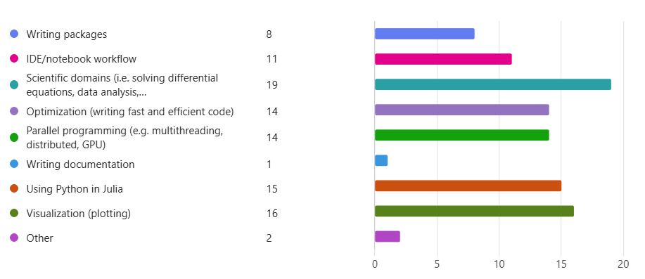

Introduction to Julia workshop
Before we start!
If you don’t have Julia installed: download
juliaupfrom https://github.com/JuliaLang/juliaupDownload the workshop repository to your computer:
In the root of the repository directory, run in your terminal
> julia install_and_compile.jl
- Will download, install, and compile the dependencies.
- Might take a few minutes.
Who am I?
… and who am I to organize this workshop?
- Came across Julia in 2018 - perfect timing!
- One language that can do all
- Used Julia for most of my classes
- At least those where the professor let me use it
- Used it for my MSc thesis
- Currently using it for my PhD work
- Know a lot about Julia, but I am not a software engineer
The Julia programming language
In a nutshell
A dynamic, general-purpose programming language designed to be both accessible and fast.
- Born at MIT in 2009, first release in 2011.
- Jeff Bezanson, Stefan Karpinski, Viral B. Shah, Alan Edelman
- Version 1.0 released in 2018
- Still very actively developed, current version v1.11, with v1.12 on the horizon.
Core features
- Inherently fast and easy to optimize
- Built-in package manager and general registry
- Virtual environments
- Intuitive and math-like syntax
- Composable: seperate parts work together
- Free and open source
Other features
- Easy parallelism
- Call C and Fortran functions natively
- Easy to call Python code
- Automatic differentiation
- Automically generate efficient, specialized code
- Metaprogramming - code that returns code
- Unicode support
- Automated memory management
How is Julia
- Julia is a JIT (Just In Time)-compiled language
- Dynamically typed, with option to declare types
- Interactive
What’s bad about Julia?
What’s bad about Julia?
- Startup latency
- Time To First X (TTFX)
- Getting better every year
- Precompiling new packages
- Time To First X (TTFX)
- Easy to learn, hard to master (like baking bread!)
- Many new concepts, eg. multiple dispatch, metaprogramming
No small binaries- This is soon possible.
- Unintuitive workflow/file dependency
This workshop
- Aimed at people with zero experience in Julia.
- Will cover:
- Basic fundamentals: variables, functions, string manipulation, etc…
- More advanced fundamentals: the type system, multiple dispatch, performance considerations.
- A taste of the Julia ecosystem
Workshop content
Workshop contents
- A taste of the Julia ecosystem
- Plotting
- Tabular data analysis
- (Ordinary) differential equations
- Mathematical optimization
- Probability distributions
- Calling Python in Julia
- Multithreading
Structure of the workshop
- Notebooks with theory, examples, code, and exercises
- Four fundamental notebooks
- basics (1), plotting (2), multiple dispatch (3), performance (4)
- Everyone should do (1) and (2), recommend (2) and (3)
- Six notebooks covering a few packages in the Julia ecosystem.
- You can prioritize which you want to do.
Organizational
- Have a question? Write your name on the board.
- Make use of package documentation.
- Won’t get through everything.
- Most important is the basics
- Feel free to use the resources in this repository.
A taste of the ecosystem
DifferentialEquations.jl
- A huge package for solving differential equations (DEs)
- Support for
- Ordinary DEs, split ODEs, stochastic ODEs, differential algebraic equations (DAEs), delay DEs, many more
- One of, if not the fastest DE solver in any language
- Supports GPU acceleration
- Automatic differentiation
- Arbitrary precision arithmetic
DifferentialEquations.jl
- You never need all the functionality
- Takes a long time to precompile
- Package is split into sub-packagse
- Ordinary differential equations: OrdinaryDiffEq.jl
- Still a big package, contains on the order 100s of solvers
- Also split into sub-packages for different solvers
DataFrames.jl
- Julia package for working with tabular data
- Similar design to pandas
- Well integrated into the Julia ecosystem
- Fast, multithreaded
- Intuitive syntax
- Feature rich
Resources
Package selection
- Astronomy -> JuliaAstro
- Plotting -> Makie, Plots
- Linear systems/ least squares -> LinearSolve
- Sparse arrays -> SparseArrays
- Interpolation -> DataInterpolations, Interpolations
- Polynomial roots -> Polynomials
- Rootfinding -> NonlinearSolve
- Finite difference -> FiniteDifference, FiniteDiff
Package selection
- Integration -> Integrals, QuadGK
- Optimization -> Optimization
- Differential equations -> DifferentialEquations
- Automatic differentiation -> DifferentiationInterface
- Fast Fourier Transform -> FFTW
- Symbolic CAS ->Symbolics
- Units -> Unitful
Package selection
See more at the SciML website
Extra slides
CUDA
API, January 2025